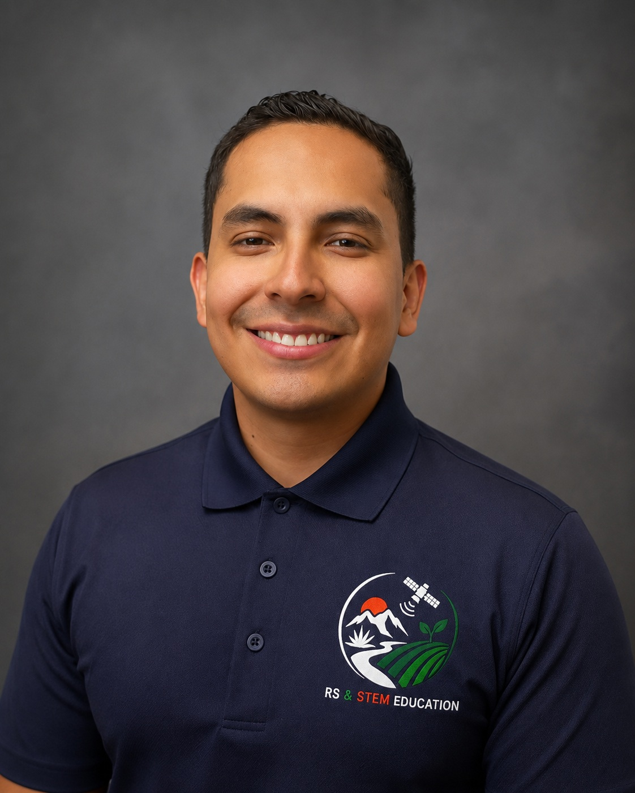
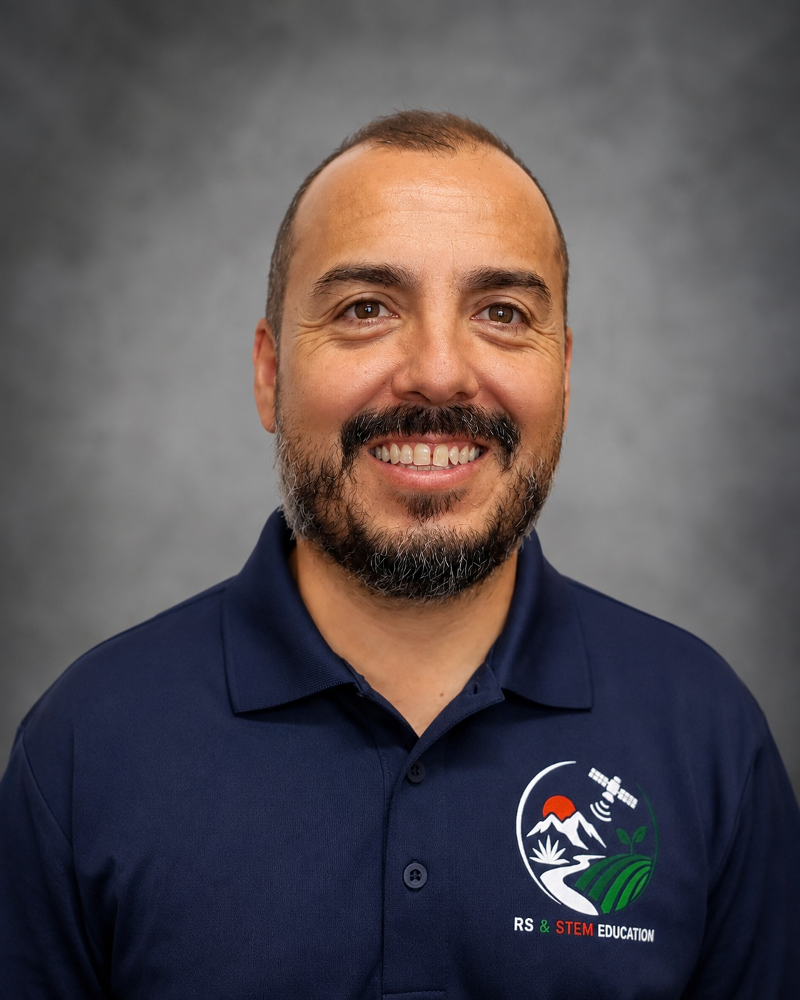
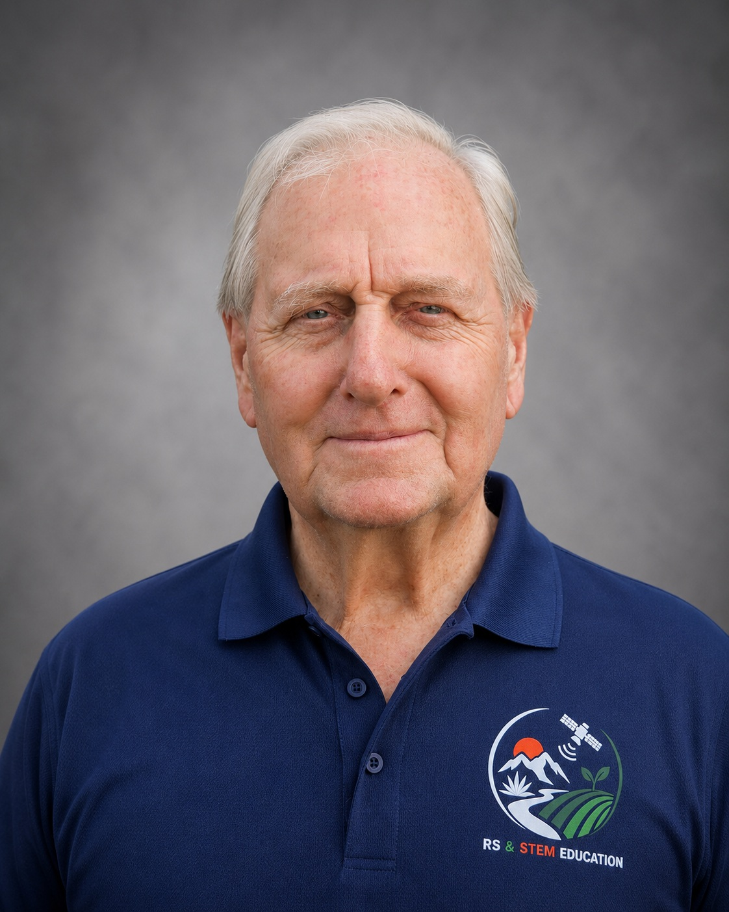

Hector Erives-Contreras
Faculty Investigator
The University of Texas at El Paso
Faculty member contributing to project coordination, expertise in remote sensing, data analysis, UAV image acquisition, image calibration, STEM education.
The RS & STEM Education project brings together faculty and students from UTEP and UACH with expertise and interests in remote sensing, engineering, agricultural applications, image processing, and STEM education.
Faculty Investigator
The University of Texas at El Paso
Faculty member contributing to project coordination, expertise in remote sensing, data analysis, UAV image acquisition, image calibration, STEM education.

Faculty Investigator
Universidad Autónoma de Chihuahua
Faculty collaborator supporting agricultural remote sensing, field activities, precision-agriculture applications, and student research and training.

Faculty Collaborator
The University of Texas at El PaAso
Faculty collaborator supporting image processing and data integration, and student research and training.

Undergraduate Researcher
The University of Texas at El Paso
Participates in satellite image analysis, image registration, Python programming, field measurements, and development of educational activities.

Graduate Researcher
Universidad Autónoma de Chihuahua
Participates in agricultural field activities, hyperspectral measurements, image analysis, and the development of educational activities.

Farm Owner
SunGro
Participates as expert and agricultural advisor, and development in educational activities.
Faculty and students work together on satellite and UAV data analysis, field-based measurements, sensor evaluation, agricultural monitoring, image processing, and the development of educational materials.